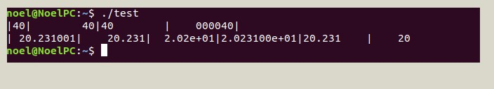

Printf()
Printf is able to display as many as strings(in any type; literal/integer/floating/expression) on the screen that's held in its () brackets.ex) printf(string, str2, str3, ....);
However how do we manage the format of input printed on the screen? For this, the conversion specifiers help.
Conversion specifiers
For easy understanding, I would write a code and interpret what it means for each statement.#include[stdio.h] //used [] instead triangular bracket.
int main()
{
int i; i = 40;
float x; x = 20.231f;
printf("|%d|%10d|%-10d|%10.6d|\n", i, i, i, i);
printf("|%10f|%10.3f|%10.2e|%10e|%-10g|%6.2g\n", x, x, x, x, x, x, x);
return 0;
}
In the previous chapter, I'd studied how to print and read the initializer(value of variable) by using %d and %f where actually those 2 are the conversion specifiers. There are several other types of cs(I want to simplify conversion specifier to just cs) but as till now, it'd be okay to deal with 4 of them; d, f, e and g. Before the beginning of the explanation, assume that m is "the maximum volume of space for numbers" and p is "the amount of numbers". Additionally if the cs contains "-" before its number, it means to represent in reverse order. Got a picture that shows the result of the code for the further explanation.
- %d : It uses the numbers 0~9 without any decimal. Empty spaces are filled with 0s. There's a similar cs for integers like i, and it uses octa(8) and hexa(16) bases so basically it's better to handle with %d instead of %i as I'm not interested using octal numbers generally.
- %f : It uses the decimal numbers and requires f at the end of the number.
- %e : It uses exponential number that can be expressed as %m.pe. I'm going to show how to use it in the interpretation of the above picture.
- %g : Used when the amount of the number is unfixed. It's a kind of combination of d and f. unline d, g doesn't show any 0 on the screen even if p value is big.
Now I'm going to interpret the image to understand how to use above 4 cs's. Firstly let's have a look on this statement, printf("|%d|%10d|%-10d|%10.6d|\n", i, i, i, i);. %10d has 10 for its m, so its max volume is 10, and the number is 40. The volume is for number of tokens actually, and 40 has 2 spaces/tokens, so unlike just normal %d, %10d's result is that it has 8 empty spaces and then 2 spaces taken by 4 and 0. I said that "-" gives the reverse order so %-10d causes 40 to be placed first at the left side, and then 8 empty spaces. %10.6d has its 10 for m and 6 for p where p is the amount of the number. The number 40 can occupy 2 tokens, then 4 more places must be occupied too because p is 6, thus the result is 4 empty space, then 4 0s and then 40.
%f has similar interpretations. In this part |%10f|%10.3f|, %10f has max 10 spaces and the number is 20.231f. So it leaves 1 empty spaces and then prints 20.231001(if we don't set p for %f, it always prints more decimals) where even the full stop"." was counted as a token. %10.3f has p as 3 to limit its decimal to 3, so it results 4 empty spaces and then 20.231.
%e is a special one with exponential value. %10e firstly takes the decimal point behind the first number of 20.231, which is 2, then the number becomes 2.0231. The picture shows its value as 2.03100e+01 where 01 after e+ is the number of times the decimal point had shifted(here, 20.231 to 2.0231, just shifted once) and this 01 seems not counted as tokens because 2.03100e+01 occupies 12 which is greater than m value. %10.2e gave the result 2.02e+01 where the amount of decimals are 2 as p values = 2.
%g can be written both in integer form and floating form. %-10g prints the numbers from left because of "-" and leaves 4 empty spaces as m is 10 and the number occupy 6 spaces. %6.2 gives max 6 spaces and limits the amount of number till 2. %f limits only the decimals by p but g can limit to the whole numbers. p is 2 in this case so the 20.231 becomes just 20. m is 6 and 20 has 2 tokens so the result has 4 empty spaces and 20.